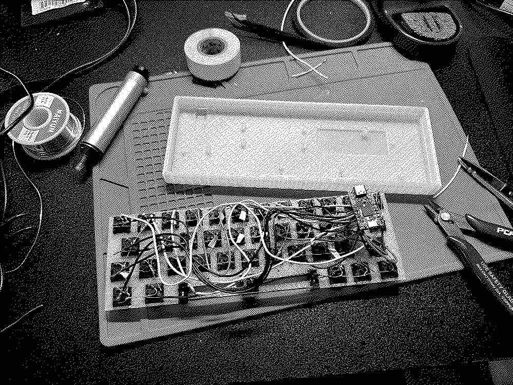

hytheaway
(.github.io)
m3-- (dec 2024)
or the "aoifernet".
github | youtube demo
honestly, i didn't really want to make this.
and i don't see a reason for me to act like i did.
between us, i went into this semester trepidatious. i needed to be enrolled in a lot of classes to keep my scholarship, and one class focused on
designing a product within the world of music technology. i was stoked about this, i had been wanting to build a binaural rendering hardware device
for ages and i thought this was a great way to do it.
my idea got shot down immediately. at first, i thought that it was too ambitious, so i inquired about reducing the scope, but that got shot down,
too. i was informed that my project idea was, effectively, not flashy enough. that it was too functional. i don't know about you, but i feel like most
commerical audio products aren't flashy, they're functional.
i was asked if i had anything else, any other project.
realizing that this semester would be packed for me, i offered a project that i had already completed, but prefaced by saying that i wasn't super
interested in revisiting it. despite that, i was told to throw my efforts on this project.
so, here it is. the m3--.
does it look familiar to you?
maybe. but i'll let you in on this: it's just a double upgraded cerial v2. or maybe side-graded? it gets confusing.
let's start with the name, and what i mean by "double up/side-graded". there's a project of mine that you've never seen.
i didn't mean to keep it from you, honest. it just... never came up in conversation.
at some point, i'll actually finish the write up for it, but that project was the m3, the mini midi manipulator. famous for being not mini,
using not midi, and arguably probably not manipulating. the m3 was a lot more of an obvious progression to the cerial, using the meap v3 board.
so, just as c++ is to c, the m3-- is to the m3.
i've also got a cat named aoife, and when designing the pcb, i replaced the term "ethernet" with "aoifernet". and i love it.
---
so what is it? what does it do?
well, kind of anything you want it to. and that's by design.
all the audio and music processing occurs on the on-board teensy, which can be connected to the equally on-board mini pc.
that mini pc is running full windows 11, so you can actively re-program the teensy to make it do whatever you want. you don't even need to press the reset
switch on the teensy itself.
there are a total of twelve buttons and a standard ssd1306 oled screen that can be drawn to. these buttons can do whatever you want, as long as you program it.
by default, the wasd movement corresponds to up, down, left, and right, and each of the buttons are assigned to a, b, x, y, lb, lt, rb, and rt.
it's more of a platform rather than anything else, and all the necessary files you'd need to recreate this can be found on my github here.
but, if you're interested, i've included a small demo that i made of it.
---
i'm kind of burnt out on this project for a bit. it's not as interesting or invigorating to me anymore, and i'm not the best at making a creative
application with this kind of idea.
if you're reading this, far in the future or far in the not future, i'm sure you could find a good use for it.
on the bright side, it does play doom.
